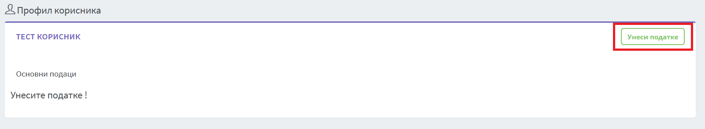
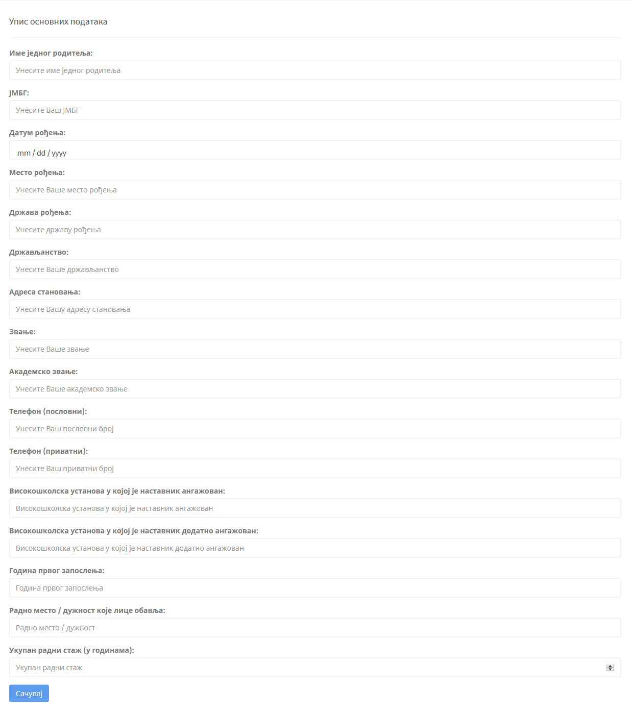
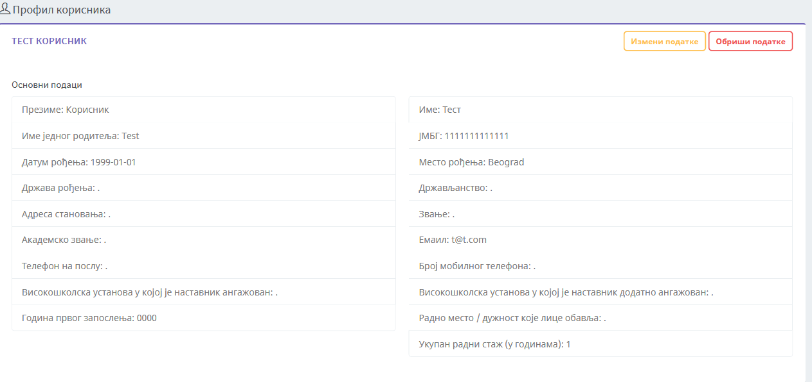
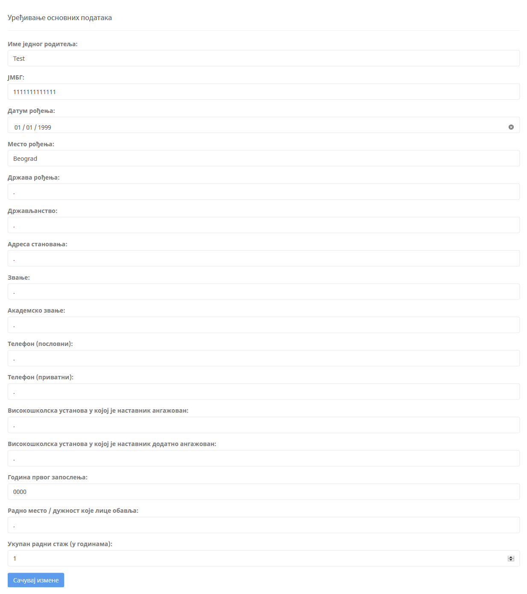

1. Увод¶
1.1. Упис основних информација¶
Када сте се улоговали први пут на систем НИР-а, потребно је да унесете Ваше привате податке. Унос података се ради кликом на дугме „Унеси податке” (означено црвеним правоугаоником).
Када се кликне на дугме „Унеси податке”, отвориће се форма за унос истих.
Сва поља за унос података су опционална, информације које нисте унели увек можете да измените када сте сачували своје податке кликом на дугме „Сачувај”. Када сте сачували све своје податке, на почетној страници ће стајати два нова дугмета. Дугме „Измени податке” и „Обриши податке”.
Ако желите да измените тренутно унешене податке кликом на дугме „Измени податке” отвориће Вам се форма за измену свих података које сте већ попунили у форми за чување истих.
